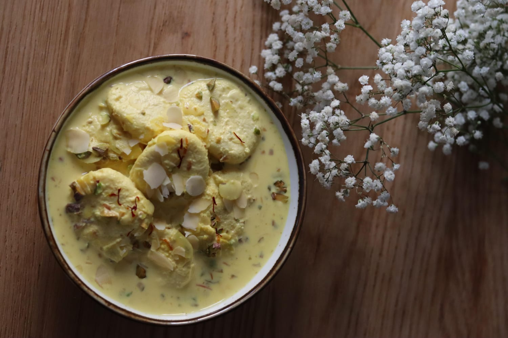

Rasmalai

Description
Rasmalai is a traditional Indian dessert made of soft, spongy cheese dumplings soaked in a rich, sweetened milk flavored with cardamom and saffron. It is often garnished with chopped almonds and pistachios, giving it a delicate aroma and a creamy texture.
Known for its light, refreshing taste and melt-in-your-mouth consistency, Rasmalai is a favorite dessert served during festivals, weddings, and other special occasions across India.
Ingredients
- 1 litre full-fat milk
- 250 g paneer (fresh or homemade)
- 2 tablespoons cornflour
- 1 litre water
- 200 g sugar (for sugar syrup)
- 500 ml full-fat milk (for rabri)
- 3 tablespoons sugar (for rabri)
- ¼ teaspoon cardamom powder
- A few strands of saffron (optional)
- 1 tablespoon chopped pistachios
- 1 tablespoon sliced almonds
- ½ teaspoon rose water (optional)
Steps
- Crumble the paneer and knead it with the cornflour until it becomes smooth and soft.
- Divide the dough into 10-12 equal portions and roll each into a smooth ball. Flatten them slightly into small discs.
- In a large pan, bring the water and 200 g sugar to a boil to make the sugar syrup.
- Carefully add the paneer discs to the boiling syrup. Cover and cook on medium-high heat for 12-15 minutes until they double in size.
- Remove the discs and let them cool slightly. Gently squeeze out the excess syrup.
- In another saucepan, bring the 500 ml milk to a gentle boil. Add the 3 tablespoons sugar, cardamom powder, and saffron. Simmer for 10-15 minutes, stirring occasionally, until the milk thickens slightly.
- Remove the milk from the heat and stir in the rose water, if using.
- Place the cooked paneer discs into the warm milk mixture and let them soak for at least 1 hour.
- Garnish with chopped pistachios and sliced almonds.
- Refrigerate for a few hours and serve chilled.
Home